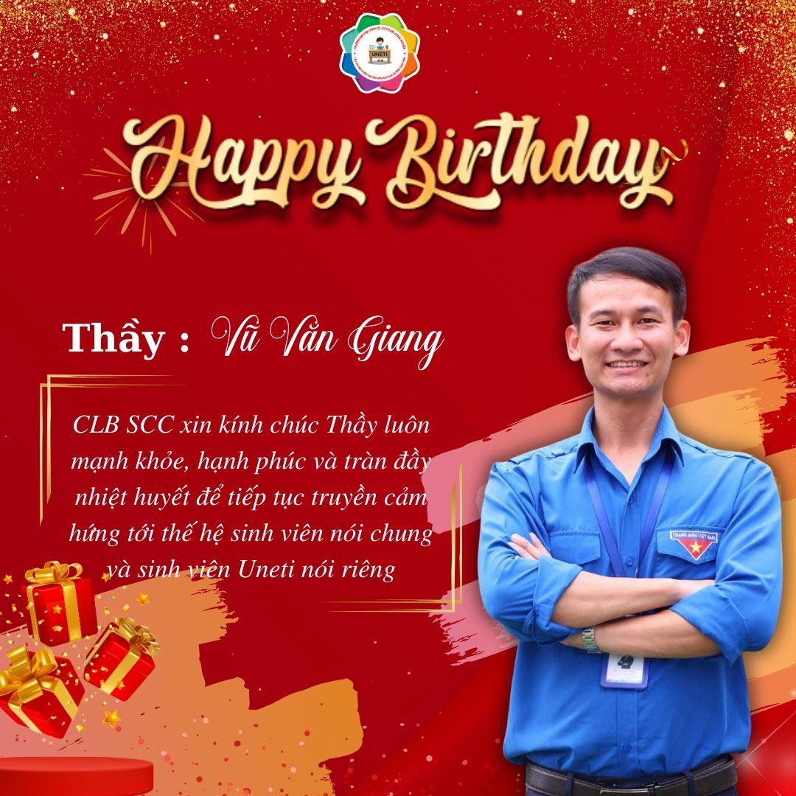

CLB Tuyên truyền Văn hóa học đường Sinh viên
Chào mừng đến với website chính thức của CLB Tuyên truyền Văn hóa học đường Sinh viên!
Thân thiện - Chuyên nghiệp - Đồng hành và Chia sẻ
Tổng quan
CLB Tuyên truyền Văn hóa học đường Sinh viên - SCC (School Culture Club) được thành lập ngày 25/02/2023 trực thuộc Đoàn TNCS Hồ Chí Minh và Phòng Chính Trị & Công Tác Sinh Viên của Trường Đại học Kinh tế - Kỹ thuật Công Nghiệp. CLB hoạt động theo Slogan "Thân thiện - Chuyên nghiệp - Đồng hành và Chia sẻ".

Với lòng nhiệt huyết và tinh thần năng động sáng tạo của tuổi trẻ, luôn tiên phong trong đi đầu các phong trào, CLB Tuyên truyền Văn hoá học đường Sinh viên UNETI sẽ là một sân chơi, một diễn đàn thực sự dành cho các chiến binh áo đỏ 5S, không chỉ được nâng cao kiến thức, kỹ năng mềm cho bản thân, tự tin, bản lĩnh để thay đổi, mà còn là nơi để các bạn cùng nhau giao lưu, chia sẻ, nâng cao nhận thức, tổ chức nhiều họat động giúp cho văn hoá học đường ngày một trở thành nét văn hoá mang thương hiệu UNETI.
Hoạt động thường nhật
Tuyên truyền văn hoá học đường

Đây là một trong những hoạt động mang tính chất phản ánh tích cực nhất của CLB. Nhằm góp phần xây dựng và duy trì văn hoá học đường vững mạnh, CLB phối hợp cùng các thầy cô, cán bộ nhà trường và các thành viên CLB Khoa để tuyên truyền, kiểm tra, đôn đốc và nhắc nhở sinh viên thực hiện tốt “Văn hoá học đường Sinh viên UNETI”.
Đồng hành Phòng hành chính một cửa và Trực đầu giờ

CLB sẽ có các thành viên đến Phòng Hành chính Một cửa, tham gia hỗ trợ công tác hành chính, tiếp nhận – giải đáp yêu cầu của sinh viên và phối hợp thực hiện các nhiệm vụ liên quan. Thành viên còn có thể tham gia điều phối, giám sát tại các khu vực hành lang, cổng trường, thang máy… góp phần đảm bảo trật tự và hỗ trợ không gian giảng đường vào đầu giờ sáng và chiều.
Buổi giao lưu - Hoạt động ngoại khoá

Những buổi họp – giao lưu thân mật và các hoạt động ngoại khóa giúp các thành viên thêm gắn kết và năng động hơn. CLB cũng duy trì nhiều hoạt động sôi nổi như phỏng vấn tuyển thành viên gen mới, họp mặt định kỳ hằng tháng, sinh nhật CLB, các buổi picnic… cùng nhiều chương trình thú vị khác đang chờ đón phía trước.
Tham gia hỗ trợ các sự kiện - hội thảo

Luôn là một trong những CLB năng động nhất, các thành viên của CLB luôn sẵn sàng tham gia hỗ trợ để mọi sự kiện và hội thảo, từ lớn đến nhỏ, diễn ra suôn sẻ và thành công nhất. Điều đó góp phần khẳng định tinh thần nhiệt huyết và sức trẻ của Trường Đại học Kinh tế – Kỹ thuật Công Nghiệp.
Các ban điều hành
Xem thêm tại trang [Thành viên]
Ban Chủ nhiệm

Ban Chủ nhiệm nắm giữ vai trò quan trọng bậc nhất, mang tính trách nhiệm cao và là người đặt tầm cao mới cho CLB. Ban đảm bảo mọi hoạt động, từ hỗ trợ đến công việc thường lệ, đều được lập kế hoạch chi tiết và vận hành hiệu quả.
Thành viên ban chủ nhiệm:
Trần Thế Phú, Vũ Thị Thu, Phạm Thị Ngọc Lan
Ban Tuyên truyền

Ban Tuyên truyền và thực hiện là đầu mối điều hướng cho toàn bộ thành viên CLB trong việc tuyên truyền và thực hiện Văn hoá học đường (VHHĐ). Trách nhiệm cốt lõi là khảo sát, giữ gìn nét khai trang, lịch sự, văn minh của sinh viên ngay trong khuôn viên trường.
Trưởng phó ban:
Vũ Thế Anh, Trịnh Ngọc Công, Phạm Thị Trang
Ban Phát thanh

Ban Phát thanh có nhiệm vụ kiến tạo nội dung cốt lõi: dựng content, bài viết, bài báo, và các chương trình phát thanh nhằm nâng cao nhận thức VHHĐ của sinh viên UNETI. Những nội dung này là nền tảng cho các bài đăng chính thức trên trang web nhà trường và Fanpage CLB.
Trưởng ban:
Nguyễn Tố Chinh
Ban Truyền thông

Ban Truyền thông là đội ngũ công nghệ đa phương tiện của CLB! Từ chụp ảnh, quay video, xây dựng video - phim, design, đến quản lý bài đăng, Ban có trách nhiệm hỗ trợ và truyền thông hiệu quả cho mọi hoạt động, sự kiện, hội thảo trên các nền tảng chính thức như website, Fanpage, và Tiktok!
Trưởng phó ban:
Vũ Thị Thu, Dương Thị Kim Anh
Phụ trách
Thầy cô - Cán bộ Phụ trách CLB đóng vai trò là người dẫn dắt, cố vấn chuyên môn và là cầu nối quan trọng giữa CLB với Nhà trường. Đây là người định hướng hoạt động, kiểm duyệt nội dung và đảm bảo mọi kế hoạch của Ban Chủ nhiệm được triển khai phù hợp với quy chế và mục tiêu chung của UNETI, giúp CLB VHHĐ phát triển bền vững và đúng đắn.
Thầy cô - Cán bộ phụ trách:
Cô Nguyễn Thị Thảo Mai, thầy Trần Ngọc Vân, chị Phạm Minh Châu và anh Hà Văn Chính
Thông báo CLB
[Ngày 08/02/2026] 🎉Chúc mừng sinh nhật Thầy Vũ Văn Giang🎉
(Phó bí thư Đoàn Thanh Niên)

THÔNG BÁO KẾT QUẢ CHUNG KẾT "NÉT HOẠ MÙA XUÂN"
GIẢI NHẤT: Nhóm Liên Minh Đào Mai | Sắc Họa Xuân Non Sông
GIẢI NHÌ: Nhóm Sắc Xuân 2 | Mở Trang Xuân
GIẢI BA: Nhóm Phúc Lộc | Xuân yêu thương - Tết sum vầy
GIẢI KHUYẾN KHÍCH: Nhóm Sắc Xuân | Cá Chép Hoá Rồng
⌛ THÔNG BÁO BẢO TRÌ TRANG WEBSITE CLB ⌛
Nội dung:
- Cập nhật tin tức mới nhất
- Thêm những tin tức cũ
- Sửa lỗi
- Còn nhiều cái nữa đang đề cập đến!
Trân trọng cảm ơn và theo dõi!
Bởi: Trần Đặng Bình Minh (Nhà sáng lập website) và Trần Danh Quang (Ban Truyền Thông)
Ngày thông báo bảo trì: 06/02/2025
Sự kiện
Xem thêm tại trang [Tin tức]

CLB Tuyên truyền văn hoá học đường sinh viên luôn đồng hành với sinh viên UNETI thân yêu!

Liên hệ
 Facebook CLB:
https://www.facebook.com/VHHDSVUNETI
Facebook CLB:
https://www.facebook.com/VHHDSVUNETI
Facebook Đoàn Thanh Niên UNETI:
https://www.facebook.com/DoanTN.HoiSV.Uneti
Facebook Phòng Chính trị & Công tác Sinh viên UNETI:
https://www.facebook.com/PhongCTvaCTSV.Uneti
 TikTok CLB:
https://tiktok.com/@uneti.clb.scc
TikTok CLB:
https://tiktok.com/@uneti.clb.scc
✉️ Email SCC: clb.tuyentruyenvhhd@gmail.com
📞 Hotline CLB: 02432336137
🌐 Website Trường: https://uneti.edu.vn